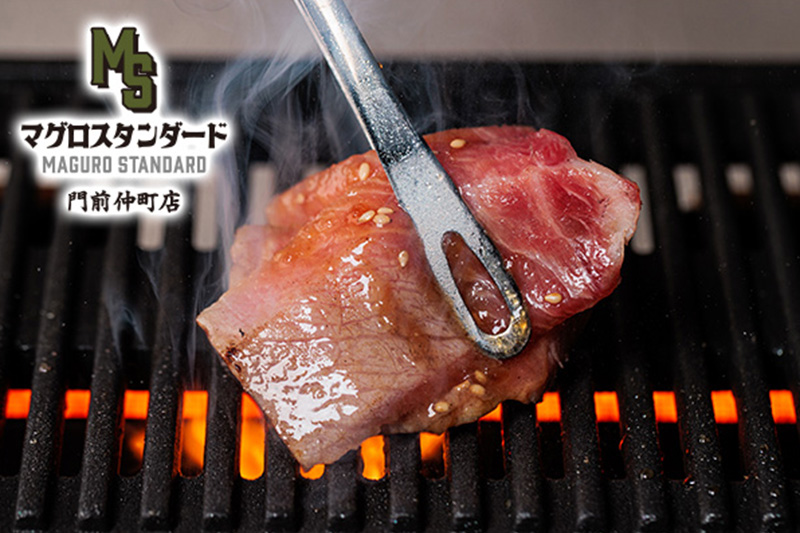
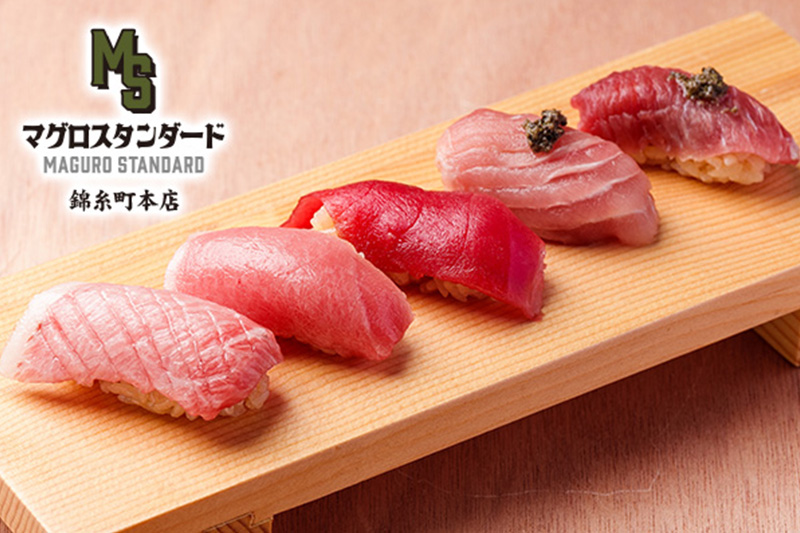
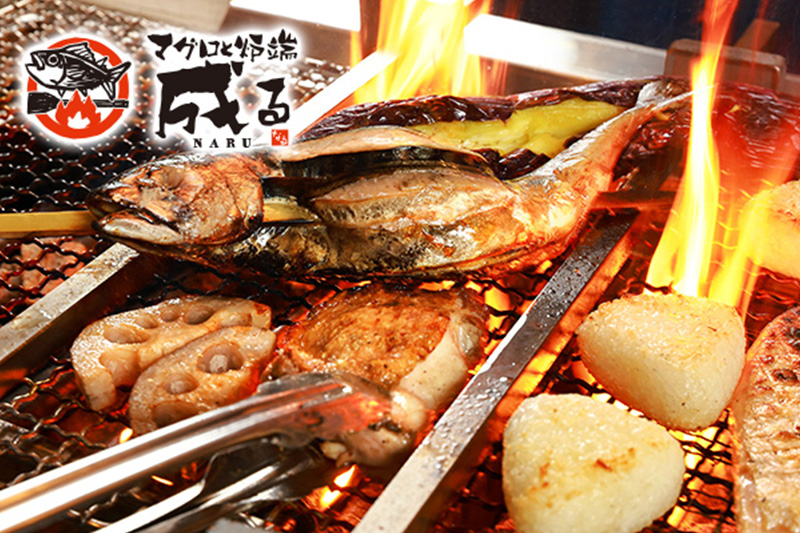
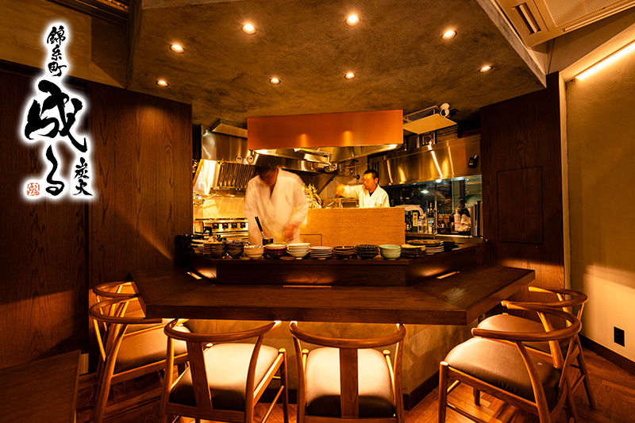

マグロスタンダード 門前仲町店
捨てる部分がないと言われているマグロを焼肉、刺身、煮付けなど
バラエティ豊富な調理方法でご提供している居酒屋です。
- 住所
- 東京都江東区富岡1-25-4
ニックハイム八幡103 - 電話番号
- 03-5809-8066

捨てる部分がないと言われているマグロを焼肉、刺身、煮付けなど
バラエティ豊富な調理方法でご提供している居酒屋です。

マグロ寿司・マグロ焼肉と熟成鮨をワインで楽しむ、海鮮居酒屋です。

目の前で豪快に焼き上げる炉端料理とマグロを使った見た目から味まで
こだわっている料理が自慢の居酒屋です。

美味しい海鮮、和食を食べたい皆様に。「日本の旨い」が食べられる大人の隠れ家。
豊洲直送の鮮魚を“おかもち”から選び、福井の産直米を土鍋ご飯でいただく「米と魚と炉端」のお店。
〒130-0022
東京都墨田区江東橋2丁目7-6 Uビル1階